Peter Luger in New York City
Date: June 16, 2025 — New York City, New York
Peter Luger Steak House is a legendary spot in Brooklyn, New York. This was my first time dining there. It used to hold a Michelin star, but lost it in 2022 due to inconsistent food quality, according to this article. Despite all the criticism, I personally had a great experience.
As the photos show, the interior is luxurious and traditional:
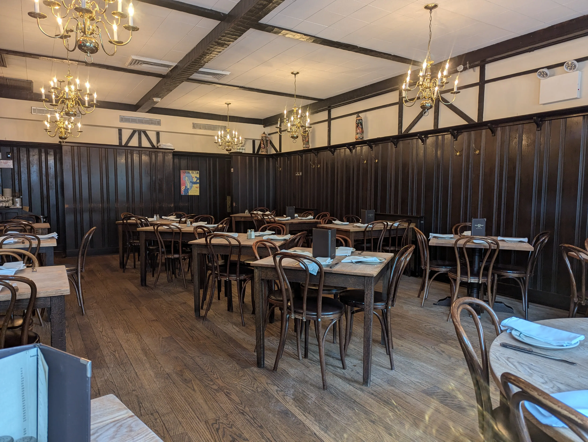
We were seated at a table by the window. Somehow, the view outside looked even better from inside this historic restaurant.
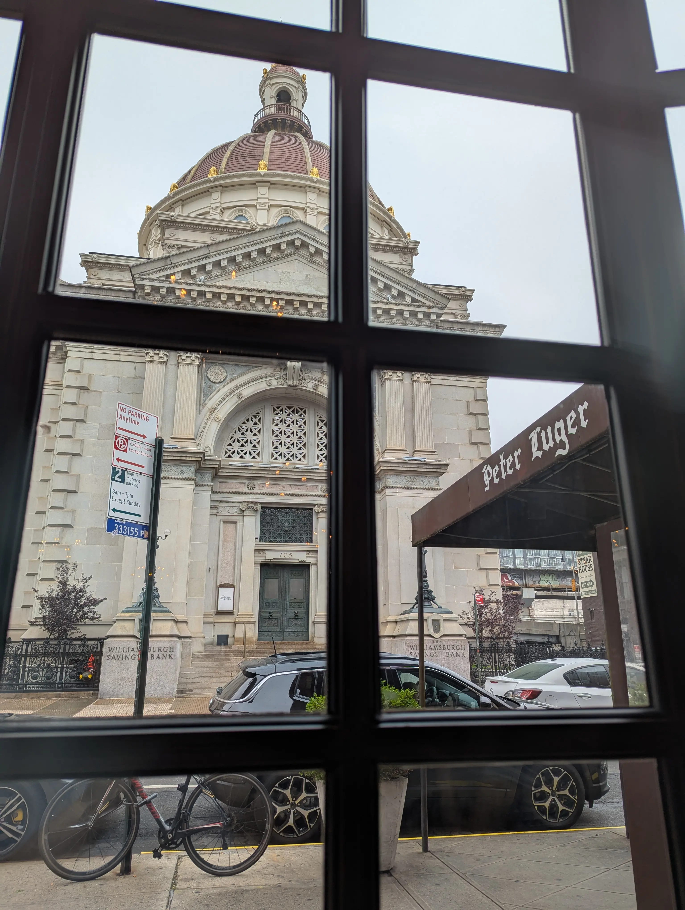
I hadn’t done much research ahead of time, but when I saw a sausage lunch special on the menu, I realized this is actually a German-style steakhouse. You can also tell from the decorations on the wall:
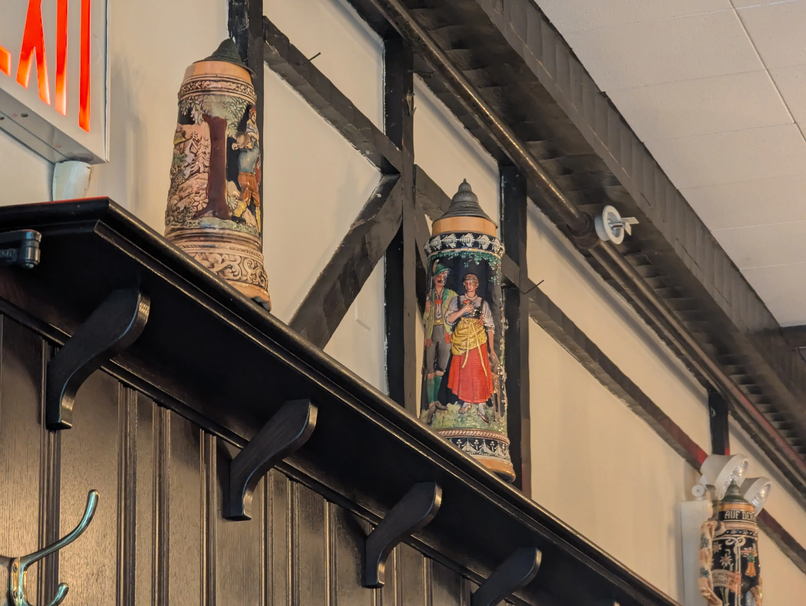
Our waiter was kind and professional—he only spoke when needed, but always helpful. Right after we placed our order, a basket of bread arrived along with their signature steak sauce. The sauce had a cocktail-like flavor to it, and I really enjoyed it.
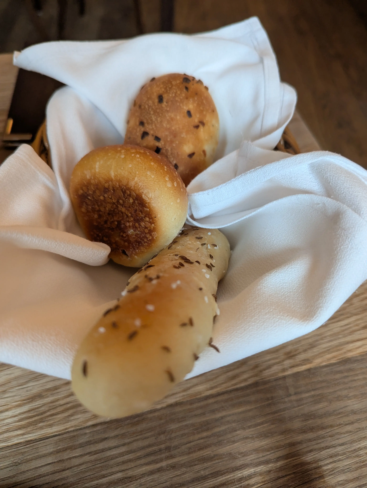 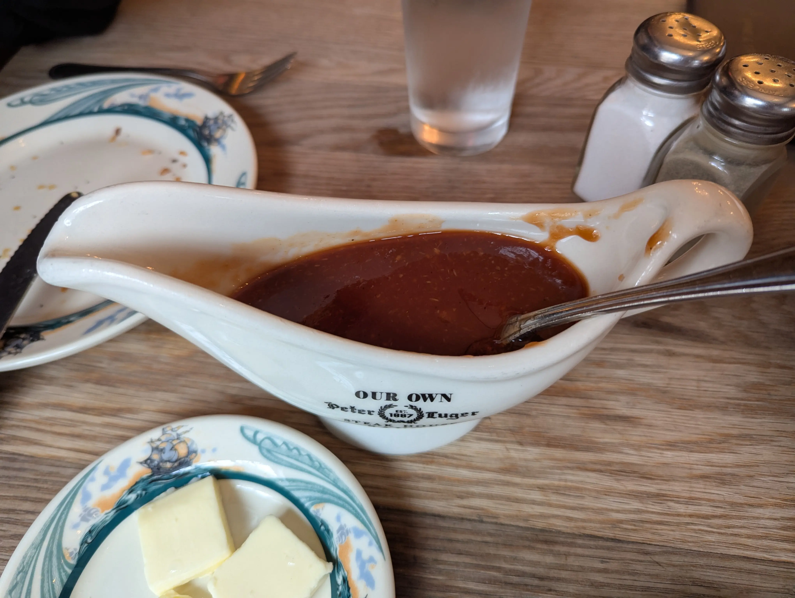
We started with bacon and Caesar salad as appetizers. The bacon was amazing—not overly salty like supermarket bacon, and thick enough to really taste the meat. It was so good I decided to order the sausage lunch special right after. The Caesar salad was also well done, and not overly salty like many other steakhouses tend to make it.
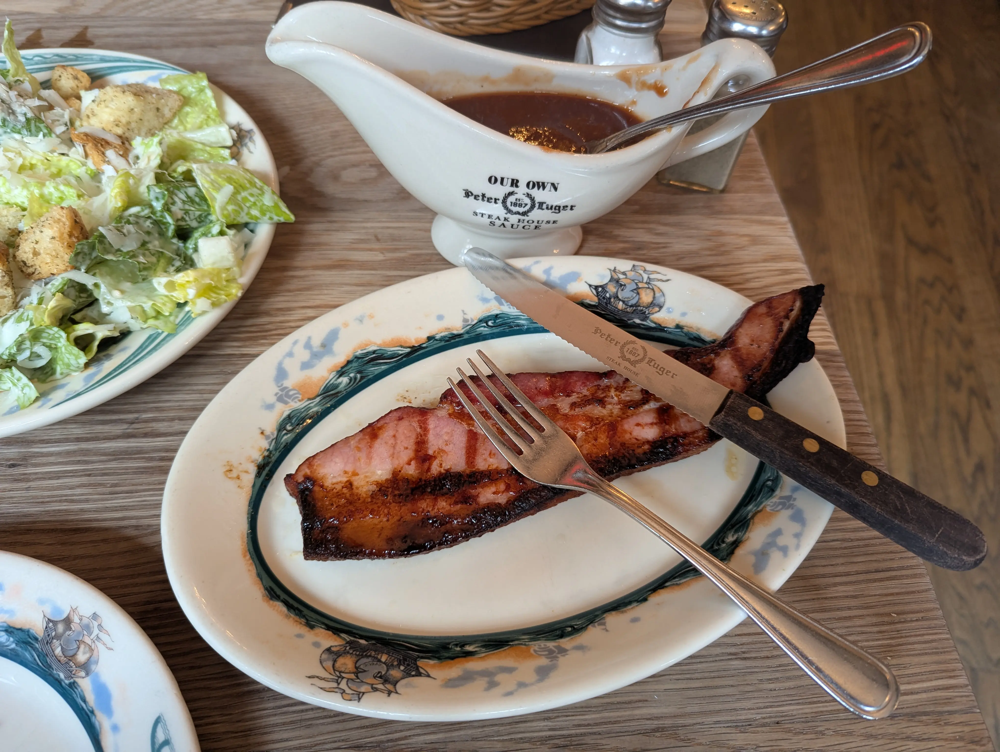 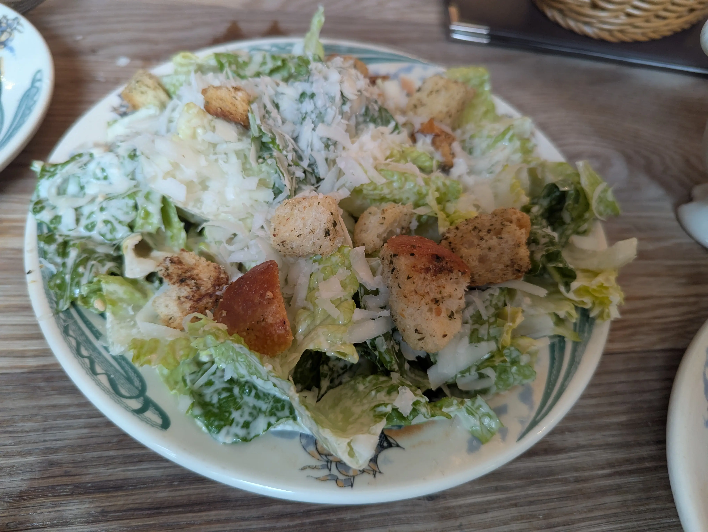
For the main course, we got the steak for two—a porterhouse that includes both filet mignon and New York strip. I really liked how they presented it. The waiter propped one side of the sizzling hot platter with a small upside-down dish to angle it toward the sunlight, making the steak glisten. Then came the classic Peter Luger touch: he used two spoons to plate one piece of filet and one piece of strip onto each dish, along with some clarified butter.
The steak was tender and juicy, served perfectly medium-rare at first. Since the platter was still hot, the rest of the steak continued to cook and reached medium over time—but it stayed juicy throughout.
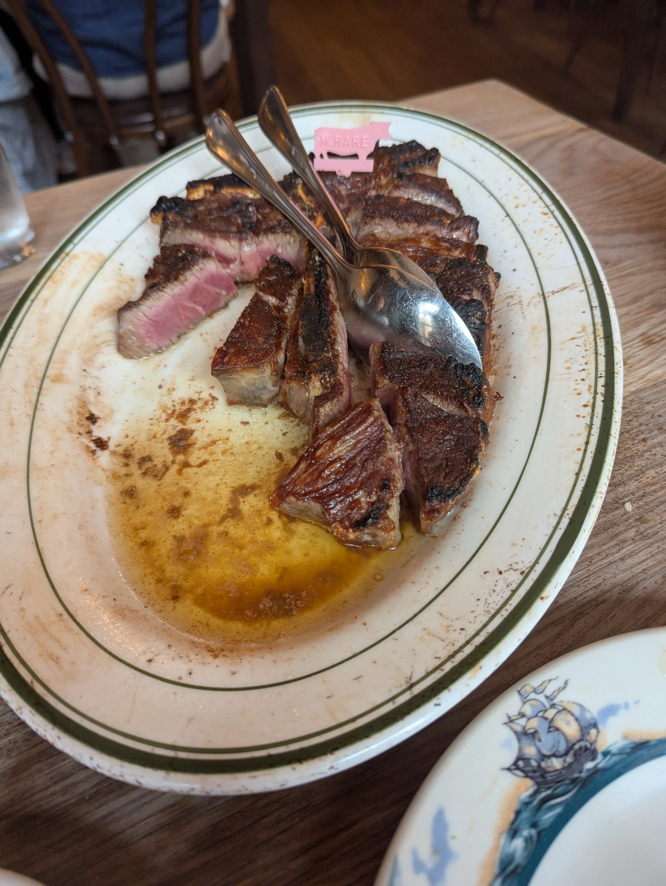 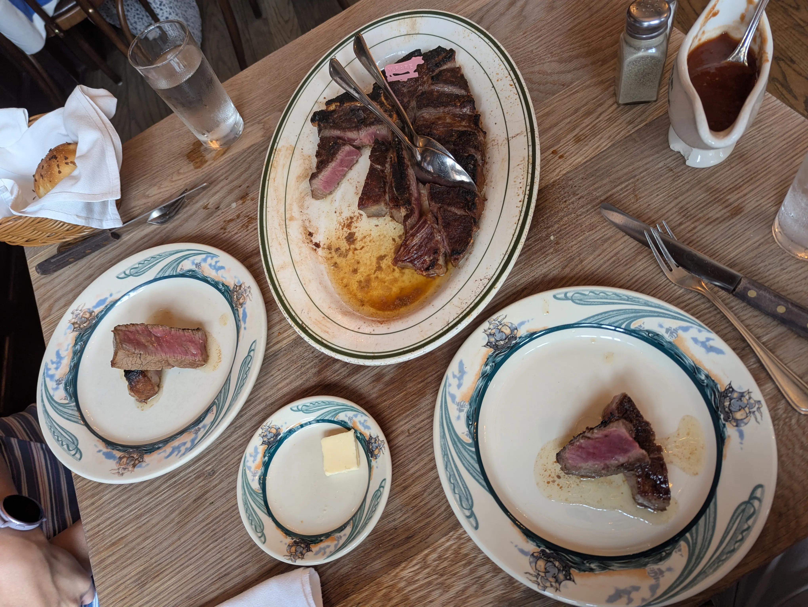
The sausage had no pepper or heavy seasoning—just a clean, meaty flavor. Personally, I preferred it without the Dijon mustard.
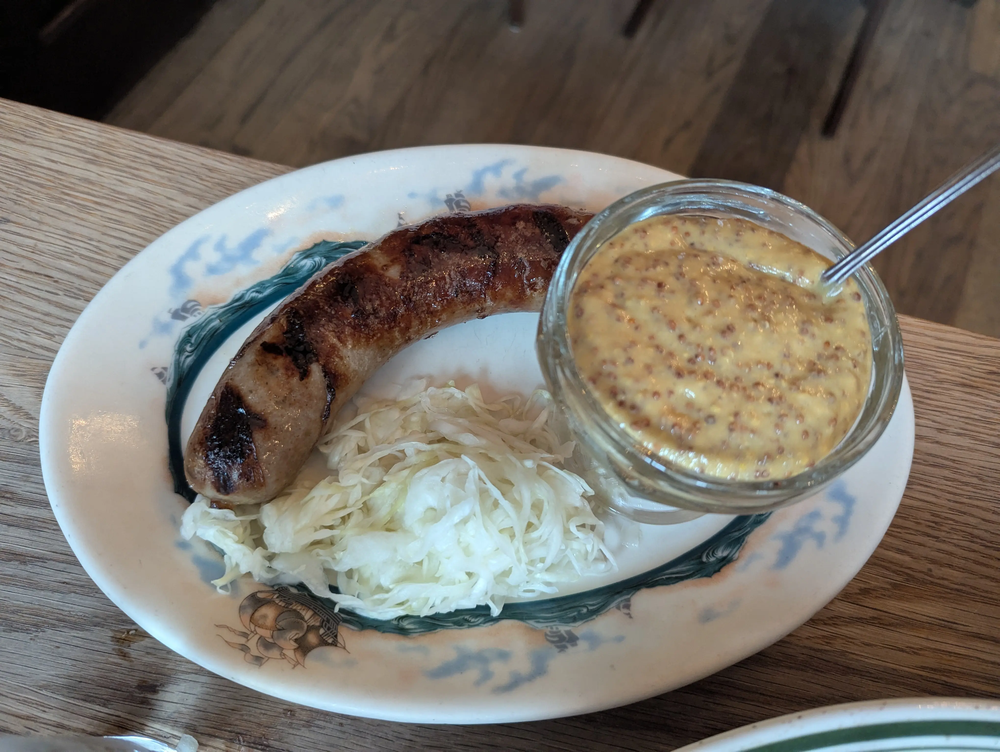
The meal ended with some chocolates:
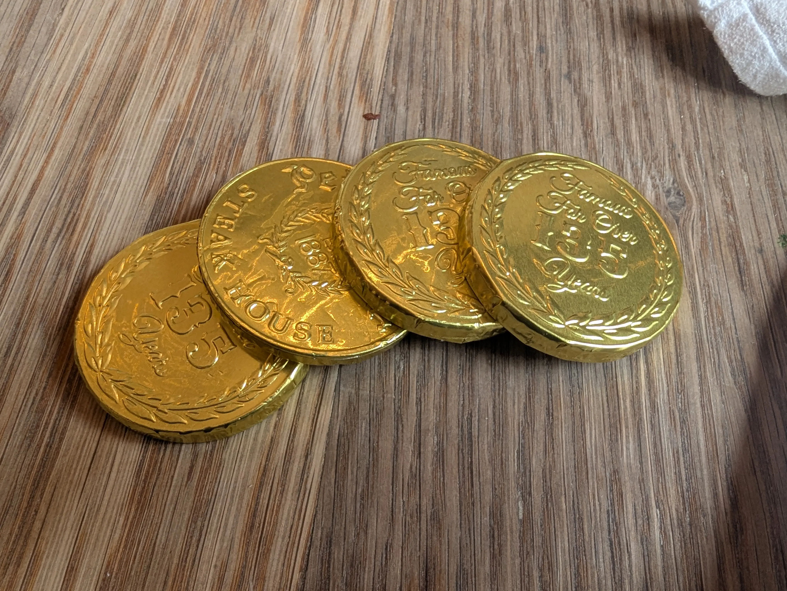
To sum up, I really enjoyed the entire meal. Our waiter was friendly and even made a few jokes, which added to the atmosphere. (Interestingly, the waiters at nearby tables seemed more reserved.) The steak was fabulous. I truly believe the porterhouse is a must-have at Peter Luger—or maybe even a must-have if you’re visiting NYC.
Article tags: Personal